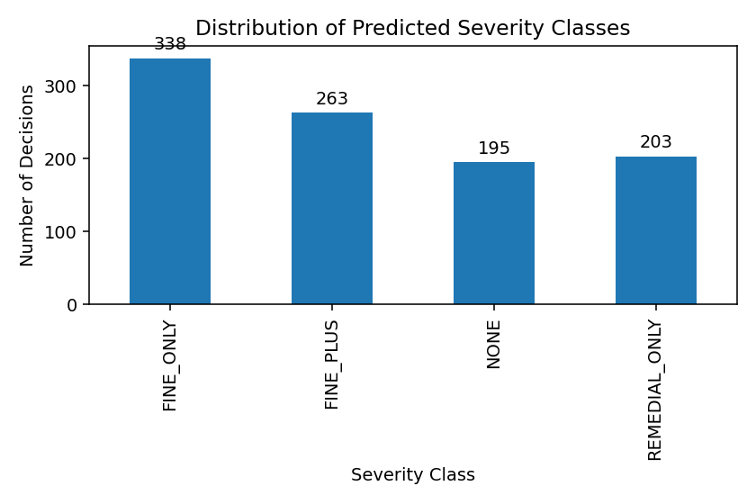
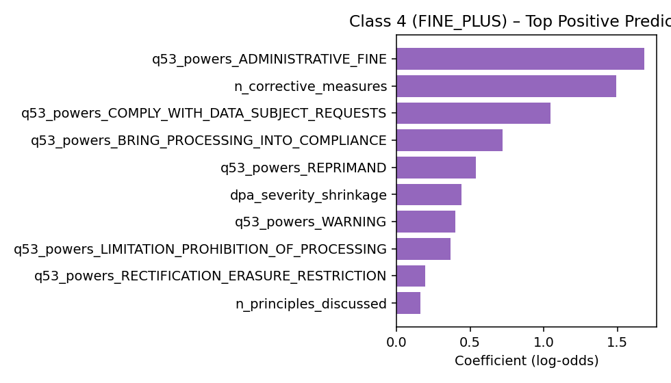
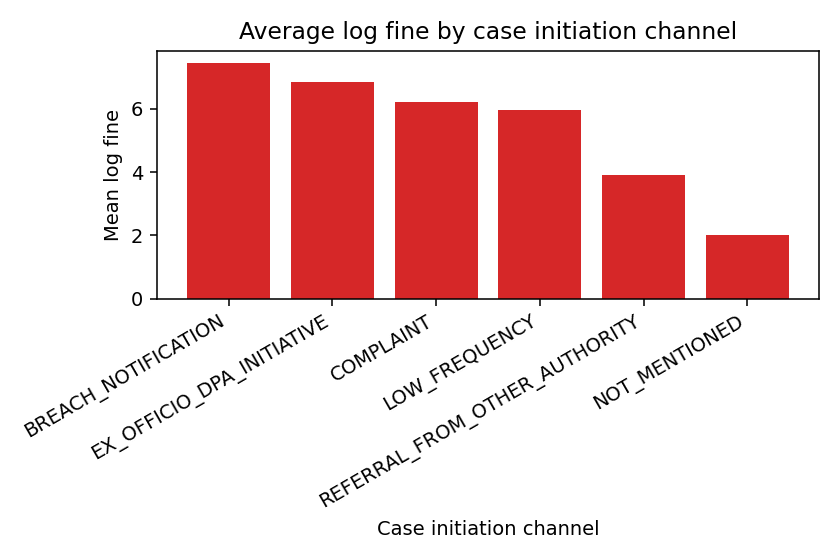
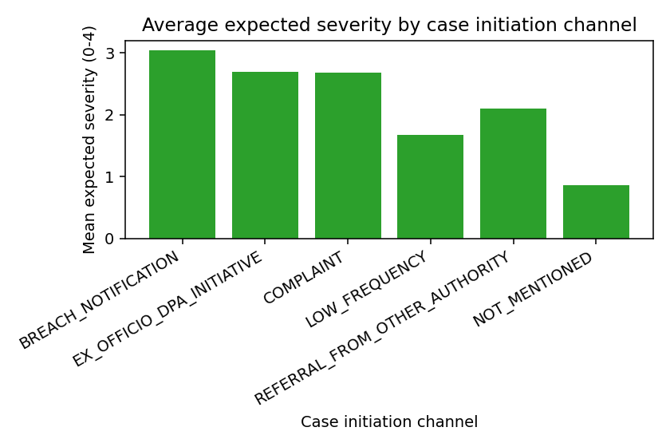
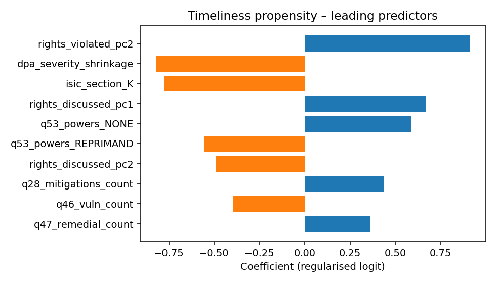
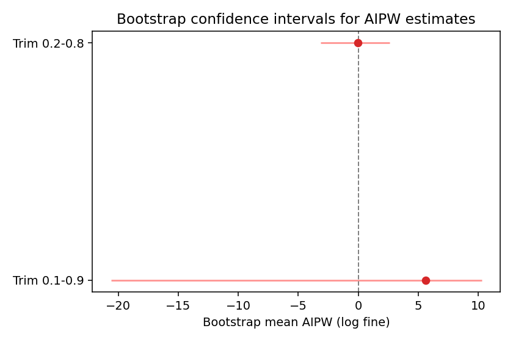

This report summarises the current quantitative evidence on GDPR breach notifications, drawing on our enriched feature matrix (999 decisions). It is intended for legal scholars and data-protection practitioners seeking to interpret enforcement patterns through both statistical and doctrinal lenses.
We analyse cleaned AI-labeled decisions using two regularised models: (i) a multinomial classifier of enforcement severity (NONE → FINE_PLUS), and (ii) a propensity/OLS pipeline estimating the effect of timely Article 33 notification on log-transformed fines.

| severity_label | count | mean | std |
|---|---|---|---|
| FINE_ONLY | 338 | 3.006 | 0.011 |
| FINE_PLUS | 263 | 3.969 | 0.047 |
| NONE | 195 | 0.019 | 0.058 |
| REMEDIAL_ONLY | 203 | 2.012 | 0.028 |
Observation. The severity classifier separates four tiers cleanly: most matters end in fines (with or without additional powers), while sanction-free cases remain rare. Expected severity is lowest for cases featuring no corrective powers and highest for those with extensive Article 58(2) measures.

Key insight. Article 58(2) levers such as administrative fines, compliance orders, and remedial mandates dominate the transition into the FINE_PLUS tier, supporting doctrinal expectations that DPAs combine monetary and structural remedies in the most serious cases.


| case_initiation | count | mean_log_fine | mean_severity_expected |
|---|---|---|---|
| BREACH_NOTIFICATION | 92 | 7.461 | 3.043 |
| EX_OFFICIO_DPA_INITIATIVE | 58 | 6.834 | 2.686 |
| COMPLAINT | 745 | 6.216 | 2.680 |
| LOW_FREQUENCY | 12 | 5.957 | 1.666 |
| REFERRAL_FROM_OTHER_AUTHORITY | 20 | 3.922 | 2.098 |
| NOT_MENTIONED | 26 | 2.010 | 0.854 |
Interpretation. Self-reported breaches (Art. 33 notifications) and ex officio investigations correlate with the highest fines and severity scores. The pooled low-frequency bucket (media, joint investigations, follow-ups) drops markedly, reinforcing the inference that proactive or high-visibility triggers correspond to harsher enforcement toolkits.
| initial_sample_size | trimmed_sample_size | treated_cases | control_cases | naive_average_treatment_effect | aipw_average_treatment_effect | propensity_mean | propensity_std | trim_lower | trim_upper |
|---|---|---|---|---|---|---|---|---|---|
| 101 | 50 | 21 | 29 | 0.557 | 1.400 | 0.401 | 0.231 | 0.100 | 0.900 |

Reading the coefficients. Richer discussions of data-subject rights (rights_discussed/violated components) push organisations toward timely filing, whereas DPAs with historically severe outcomes (dpa_severity_shrinkage) and the presence of reprimands correlate with slower disclosure. Light-touch portfolios (q53_powers_NONE) move in the opposite direction.

| trim_range | trimmed_sample_size | treated_cases | control_cases | naive_effect | aipw_effect | bootstrap_mean | bootstrap_std | ci_lower | ci_upper |
|---|---|---|---|---|---|---|---|---|---|
| 0.1-0.9 | 50 | 21 | 29 | 0.557 | 1.400 | 5.648 | 111.822 | -20.623 | 10.294 |
| 0.2-0.8 | 36 | 17 | 19 | 1.714 | 0.299 | -0.007 | 1.368 | -3.112 | 2.631 |
Caution. Under the baseline 0.10–0.90 trim the bootstrap interval spans −20.6 to +10.3 log points, signalling severe instability driven by overlap issues. Tightening to 0.20–0.80 centres the effect near zero but retains wide uncertainty. In legal terms, we cannot yet claim that timely notification either mitigates or exacerbates fines—the data are compatible with both interpretations once extreme propensities are excluded.
Generated automatically by scripts/analysis/generate_notification_report.py. All figures and tables draw on reproducible artefacts stored under outputs/analysis/.